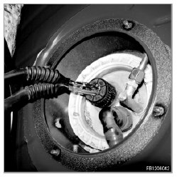
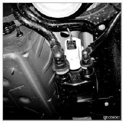
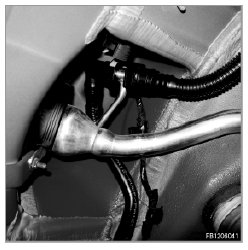
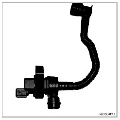
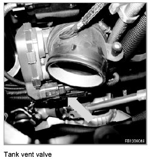
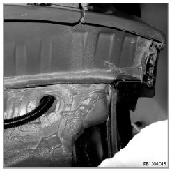
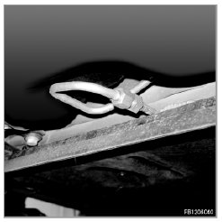
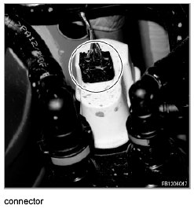

Evaporative Emissions System: Testing and Inspection
Mechanical Troubleshooting Manual For The Tank Leak Diagnosis
This troubleshooting manual indicates all fault locations that are currently known where a leak might occur.
Check connections on the fuel tank and lever sensor for leaks.

Check the connections on the carbon canister and check the carbon canister for leaks, if applicable.

Check connections at fuel filler pipe for leaks

Check the connections for scavenging air and, if applicable, the tank vent valve for leaks.


Check the corrugated tubing for leaks.

Check the lines for leaks.

Check the connector at the DMTL for leaks.
